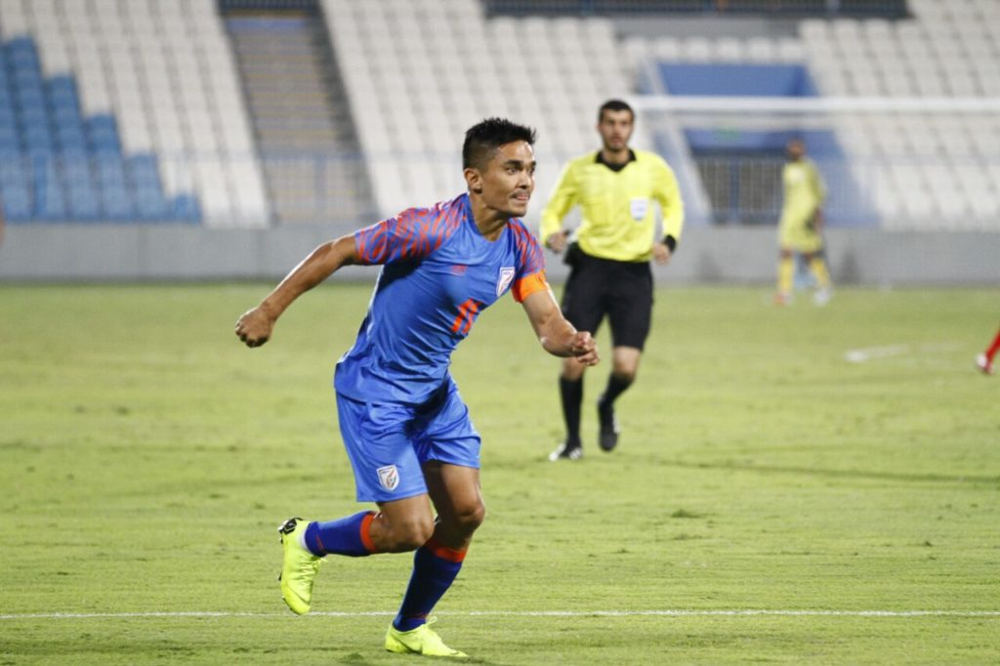

Posted at Date: January 3, 2019
Credit : রাইট স্পোর্টস ওয়েব ডেস্ক
অকপট সুনীল, ‘দশ সেকেন্ড পরেই রেকর্ড ভুলে যাই!’

ভারতের বিরুদ্ধে খেলা সহজ হবে না, সরাসরি জানিয়ে দিলেন সুনীল ছেত্রী। মাঝে আর মাত্র তিন দিন। আগামী ৬ ডিসেম্বর বাহরিনের বিরুদ্ধে এএফসি এশিয়ান কাপ অভিযান শুরু করবে ভারতীয় ফুটবল দল। প্রতিযোগিতা শুরুর আগে সুনীল জানিয়ে দিলেন এআইএফএফ-এর ওয়েবসাইটকে, ‘আমাদের এই দলটা হারতে ঘৃণা করে। সম্প্রতি বেশ কিছু ম্যাচে যা বারবার দেখা গিয়েছে। এএফসি কাপের মতো প্রতিযোগিতায় নিজেদের উজাড় করে দিতে সবাই মুখিয়ে আছে।’
দেশের হয়ে ১০৪ ম্যাচ খেলে ফেলেছেন। সর্বোচ্চ ৬৫ গোল তাঁর। এই প্রতিযোগিতাতেই গ্রুপ লিগে আরও তিন ম্যাচ পাচ্ছেন। তিনটিতেই খেলবেন ধরে নিলে ১০৭ ম্যাচ হয়ে যাবে নীল-জার্সিতে। ছুঁয়ে ফেলবেন বাইচুং ভুটিয়াকে, ভারতের হয়ে আন্তর্জাতিক আসরে যাঁর সর্বোচ্চ ম্যাচ এখন। আর, যদি ভারত নকআউটে পৌঁছতে পারে এবং সব ম্যাচে খেলেন সুনীল, পেরিয়ে যাবেন বাইচুংকে। ‘রেকর্ড নিয়ে সত্যিই মাথা ঘামাই না। হ্যাঁ, যখন জানতে পারি রেকর্ড গড়েছি, ভাল লাগে অবশ্যই। কিন্তু দশ সেকেন্ড পরেই ভুলে যাই! এগিয়ে চলি পরের ম্যাচের দিকে। রেকর্ড তাড়া করার ব্যাপারেও কোনও চাপ নেই। কখনও ভাবিইনি যে, দেশের হয়ে ১০০-র বেশি ম্যাচ খেলবে, ৬০-এর বেশি গোল করব!’ আর যাঁর রেকর্ড নিয়ে কথা, বাইচুং ভুটিয়া সম্পর্কে তো সুনীল উচ্ছ্বসিত। ‘বিরাট ভক্ত ছিলাম। অবশ্য কে না ছিল? কত কিছু শিখেছি ওঁর কাছে। যখন থেকে জাতীয় দলে খেলছি, বিরাট সমর্থন পেয়েছি ওঁর কাছে,’ জানাতে দ্বিধাহীন জাতীয় দলে বাইচুংয়ের উত্তরসূরি। একদিন আগেই বাইচুং জানিয়েছিলেন এআইএফএফ-এর ওয়েবসাইটকে, ‘আইএম বিজয়ন এবং সুনীল ছেত্রীর সঙ্গে জাতীয় দলে খেলতে পেরেছি বলে গর্বিত, সম্মানিত। ‘যখন অভিষেক হয়েছিল জাতীয় দলে, বিজয়ন তখন সিনিয়র। ওর দেখানো রাস্তায় চলেছি, ওর সঙ্গে জুটিটাও জমেছিল দারুণ। সুনীল যখন খেলতে এল, আমি সিনিয়র। দুর্দান্ত বোঝাপড়া ছিল, খানিকটা প্রতিযোগিতাও ছিল, তবে স্বাস্থ্যকর। দুজনের খেলার ধরন দুরকম। আমার পক্ষে বলা মুশকিল, কে বেশি ভাল। শুধু জামি যে, আমি ভাগ্যবান, দুই প্রজন্মের দুই সেরা প্রতিভার সঙ্গেই খেলার সুযোগ পেয়েছি।’
দলের সবার মতোই, সুনীলও এখন তাকিয়ে রয়েছেনপ্রথম ম্যাচের দিকে। ‘পরে কী হবে, পরের ব্যাপার। আমরা এখন থাইল্যান্ড ম্যাচ ছাড়া আর কিছুই ভাবছি না। জানি প্রতিযোগিতায় পরের দুটি ম্যাচ সংযুক্ত আরব আমীরশাহি এবং বাহরিনের বিরুদ্ধে। কিন্তু শিবিরে এখন ওই দুটি ম্যাচ চিন্তায় নেই। প্রথম ম্যাচের পর ভাবনা ছুটবে দ্বিতীয় ম্যাচের দিকে। জানি, থাইল্যান্ড খুবই শক্তিশালী দল। তাই মনঃসংযোগ এখন উদ্বোধনী ম্যাচেই।’ এখনও পর্যন্ত তিনবার এএফসি এশিয়ান কাপে খেলেছে ভারত। ১৯৬৪, ১৯৮৪ এবং ২০১১ সালে। সুনীল ছেত্রীই একমাত্র ভারতীয় ফুটবলার যিনি দুবার খেলবেন এশিয়ান কাপে। আট বছর আগে পারেননি ভারতকে পরের পর্বে নিয়ে যেতে। এবার আবুধাবিতে পারলে, লেখা হবে ইতিহাস!
Top Stories

Calcutta Sports Journalists' Club requests the pleasure of your company at its annual awards functionMore...

Jasprit Bumrah has been declared fit and he will now be available for selection for India's third Test against England at Trent Bridge. More...

Ronaldo has increased Juventus' standing among Europe's elite. More...